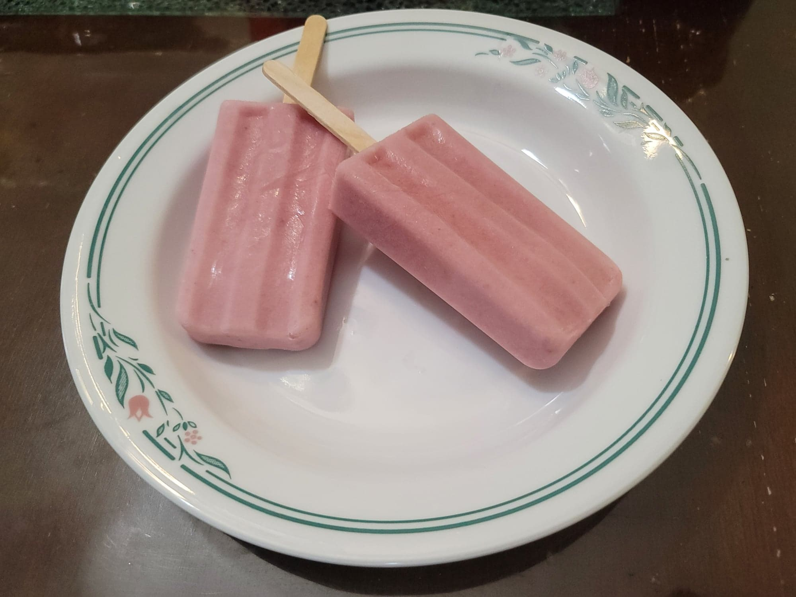

Paletas de Fresas con Crema

Ingredients:
- 8 oz Strawberries, hulled + 3 more Strawberries, hulled, sliced, and lightly mashed
- 1 1/2 cups Milk
- 1/2 cup Sugar
- 1/2 cup Heavy cream
Instructions:
- Add the 8 oz strawberries to a blender and purée until smooth. Optionally strain the purée of any seeds.
- Blend together 1/2 cup of the milk and sugar until dissolved. Then add in the rest of the milk, the heavy cream, strawberry purée, and sliced strawberries. Blend on the lowest speed until just combined.
- Pour the mixture into popsicle molds. Let freeze overnight. Serve frozen.